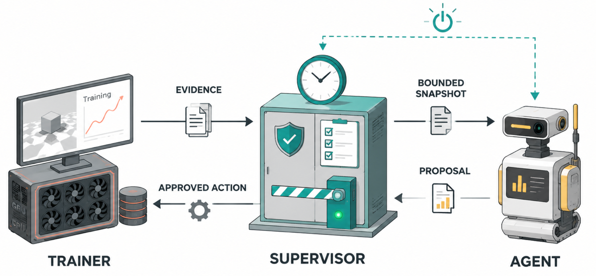
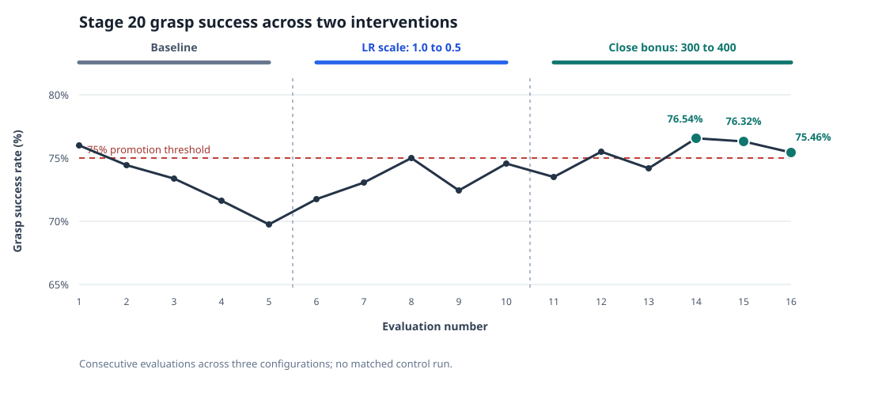

起点：让实验持续推进
这项工作源于一项训练无人机高速精准抓取物体的实验。在一位师兄开发的算法基础上，我尝试探索：无人机能否在仿真中通过物理接触学会抓取，而不只是到达一个几何目标位置。
单次 reinforcement learning 训练可能持续数小时。时间有限时，我希望自己睡觉期间训练也能继续推进；如果训练在夜里停下，GPU 就会一直闲置到我回来。
训练后的许多工作是重复性的，并非每次都需要解决新的概念性难题。长时间的平台期可能需要把 curriculum 拆分为更小的 stage；一条看起来不健康的学习曲线可能需要调整 learning rate。每个决定都要花时间，但在局部调试 curriculum 时，通常只涉及有限的指标、参数和恢复点。
于是问题变得具体了：能否让 Agent 在明确边界内作出下一步决定，使实验不必等我回来也能继续推进？
项目结构
这个项目最终分成三部分。Trainer 负责策略优化，并生成评估结果和 checkpoint。常规程序 Supervisor 监视训练进程，决定何时需要检查。每次检查时，Supervisor 将近期证据和一份范围受限的 curriculum 副本交给一个短生命周期的 Agent。Agent 提出下一步方案，Supervisor 检查提案，只有通过检查的修改才会交给 Trainer 执行。

我希望检查周期和权限边界始终由实验设计决定。研究者可以选择 Agent 多久检查一次训练、它可以涉及哪些 curriculum stage、可以修改哪些参数，以及最多可以干预多少次。等待由 Supervisor 负责；只有需要判断时才启动 Agent，这既避免 Agent 空转，也控制了成本。
一些 bug 和经验逐渐塑造了这套结构。其中最重要的有以下几点：
让训练证据易于检查。 早期日志经常只记录评估发生在哪一步，却不记录评估结果。因此，即使进程正在运行，也看不出实验是否在改善。后来我让训练端把每次评估连同所属 stage、指标和关联的 checkpoint 信息一起保存，使 Agent 能根据清晰的记录工作，而不是在终端输出里搜索。
明确什么才算完成。 根据 stage 的不同，完成可能意味着连续多次达到阈值、进入下一个 stage，或者从
regression_stop中恢复。因此，每项任务的完成条件由研究者定义，而不能把进程正常退出直接当作研究结果。让检查触发原因没有歧义。 “检查训练”过于笼统：定期查看、确认进入平台期、因回退而停止，以及尚未完成任务就退出，都需要不同的应对方式。Agent 必须知道自己这次只是观察、在诊断问题，还是要准备恢复训练。
给每个 Stage 稳定的身份标识。 插入或拆分 stage 会改变它们在数组中的位置，因此 stage 需要一个不依赖数组下标的身份标识。为此，我把 Agent 的每次回复都当成提案：只有 Supervisor 根据研究者设定的边界检查通过后，它才能改变实际运行的实验。
把 checkpoint 视为实验状态，而不只是文件。 一个 checkpoint 不能仅仅因为是最新文件就被认为适合使用；还需要说明它属于哪个 stage、从哪个上游 checkpoint 恢复而来、保存前做了哪些修改，以及为什么要做这些修改。保留这些 metadata，再用一份简短的 Markdown 记录配置差异，使恢复操作更容易验证，也让实验更容易追溯。
一个成功的例子
最明确的一次成功发生在抓取 curriculum 的 Stage 20。晋级要求抓取成功率连续三次评估达到至少 75%。这轮训练曾短暂达到 76.0%，随后回退到 69.8%。
Agent 首先降低了策略中夹爪部分的 learning rate，使参数更新更保守，并从一个经过验证的 Stage 20 checkpoint 恢复训练。表现有所回升，但仍不稳定。下一次检查时，Agent 提高了夹爪在合适时机闭合所获得的 reward，让这个稀疏事件提供更强的学习信号。
之后的一轮训练连续三次评估分别达到 76.54%、76.32% 和 75.46%。训练满足了晋级规则，进入 Stage 21。

图中展示的是两次干预前后的连续观测结果，不能单独证明任一参数调整的因果效果。
对我而言，这表明 Agent 识别出了趋势、提出了局部修改、选用了兼容的 checkpoint，并推动实验继续进行，直到进入下一个 stage。它提供的不只是建议：Supervisor 接受了它的提案，Trainer 也执行了相应操作。
局限与下一步
Stage 20 晋级后，curriculum 进入 Stage 21，抓取窗口缩小到 3 cm。成功率随之降到约 39%，远低于 65% 的目标。Agent 又尝试了几次局部参数修改，但都没有解决瓶颈。它还提出拆分 stage；由于 Agent 与 Supervisor 对新插入 stage 的命名方式理解不一致，Supervisor 拒绝了这一提案。
这不意味着监督闭环失效，而是揭示了它的能力边界：闭环能够观察、验证并应用边界内的局部修改，但当瓶颈的原因尚不明确，或原因不在允许调整的 curriculum 参数内时，它无法解决问题。自动化流程运转正常，研究却不再取得有效进展。
下一版系统可以为 Agent 提供更广泛的研究工具。除训练历史和代码外，它还可以检索论文和网页、比较相关方法，并用这些证据形成更好的假设。这会让它更接近一个功能更完整的自动化研究助手，而不只是自主调节 hyperparameter 的工具。
即使 Agent 获得更广泛的访问权限，我仍会保留 curriculum 和 Supervisor。curriculum 将探索组织成一系列可处理的问题；Supervisor 则确保每次干预不越过研究者设定的边界。给 Agent 过多自由度，可能会让人类难以理解它在做什么；而它也未必已经能够充分管理自己的研究过程，知道何时该停止、修正方向或寻求帮助。
目前缺少的是一份清晰、直观的 Agent 工作记录。我希望能看到它每次干预的时间线：读到了什么证据、做了什么配置修改、用了哪个 checkpoint，以及之后发生了什么。可读的记录能让研究者检查整个闭环，在需要时介入，也能帮助研究者加深对实验的理解，而不是仅仅看着一个自主进程运行。
在我看来，即使 recursive self-improvement（RSI）使 Agent 越来越有能力，它仍然是工具。人类研究者依然需要设计 curriculum、设定监督边界、解释证据，并决定什么样的进展值得追求。目标是让人拥有更有力的工具，也能更清楚地看见研究过程。